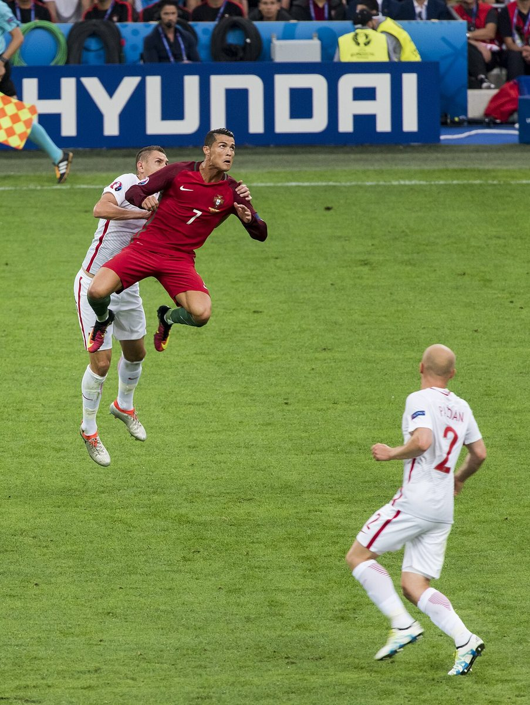

改写足球历史的马德拉少年：克里斯蒂亚诺·罗纳尔多的传奇与丰碑
从丰沙尔的铁皮屋顶与少年心脏手术，到五夺欧冠与超980粒职业生涯进球

1997年夏天，一名12岁的少年登上了飞离马德拉、前往里斯本大陆的航班。他离开家人，随身只带着一只行李箱，以及国民竞技与葡萄牙体育（Sporting CP）之间敲定的1500英镑青训转会协议。由于带着海岛口音，他在首都受尽了嘲弄；在青训宿舍里，他每晚暗自垂泪，肩上却扛着一个濒临贫困边缘家庭的重望。近三十载光阴流转，那个昔日的少年如今已耸立在世界足坛有据可查的历史之巅，成为足球史上进球最多的终极杀手。
1985年2月5日，克里斯蒂亚诺·罗纳尔多·多斯·桑托斯·阿威罗出生于丰沙尔的圣佩德罗（São Pedro）教区，在圣安东尼奥（Santo António）的山腰街区长大。他的母亲玛丽亚·多洛雷斯·多斯·桑托斯·维埃罗斯·阿威罗靠着当厨娘和清洁工打着漫长而辛苦的零工；父亲若泽·迪尼斯·阿威罗则是一名市政园丁，兼职在当地业余球队安多里尼亚（Andorinha）担任球管。在安哥拉经历葡萄牙殖民战争的军旅生涯后，迪尼斯带着战后的心理创伤归来，余生深陷酗酒泥潭。在这个恪守天主教规矩的家庭里，C罗与哥哥乌戈以及两个姐姐埃尔玛、莉莲娜·卡蒂娅同住一间窄小的卧室。追溯血统，通过曾祖母伊莎贝尔·达·彼达德，他拥有佛得角圣维森特岛的血统。崇拜美国前总统罗纳德·里根的父亲，为他取了“罗纳尔多”这个中间名。在C罗降生前，多洛雷斯曾因家庭糊口艰难动过打胎的念头，但当地医生拒绝为她实施手术。
足球成为了他的避风港。1992至1995年间，C罗效力于安多里尼亚，随后在国民竞技度过了两个赛季。然而进入里斯本的葡萄牙体育青训营后，逆境纷至沓来。在特列拉斯EB2学校就读期间，因一名老师嘲弄他的马德拉方言，他愤而掷椅砸向对方，随后被学校开除。14岁那年，他与母亲以及葡萄牙体育的导师莱昂内尔·蓬特斯（Leonel Pontes）达成约定：在读完六年级后彻底终止正规学业，将醒着的每一分每一秒都倾注在球场上。可仅仅一年后，例行体检就查出他患有心动过速——这种心律失常极可能让他的竞技生涯未及起步便告夭折。他接受了心脏激光消融手术，灼烧了心脏内的异常传导通路。术后当天下午他便获准出院，短短几天后就重新回到了训练场。

从里斯本到曼彻斯特：接过7号战袍
2002年8月14日，在欧冠资格赛对阵国际米兰的较量中，时任主帅拉斯洛·博洛尼（László Bölöni）派年仅17岁的C罗上演了一线队首秀。2002年10月7日，他在3比0完胜莫雷伦斯的比赛中梅开二度，正式宣告在葡超赛场强势登场。不到十个月后的2003年8月6日，葡萄牙体育在何塞·阿尔瓦拉德球场落成揭幕战中迎战曼联，C罗将曼联防线搅得天翻地覆，率队以3比1取胜。曼联主帅亚历克斯·弗格森坚决不肯空手离开球场，必须当场签下这名年轻人。2003年8月12日，曼联斥资1200万英镑将其招致麾下，创下当时英格兰足坛青年球员的转会费纪录。
C罗原本申请继续穿在里斯本穿过的28号，弗格森却将刚刚由大卫·贝克汉姆卸下、曾属于乔治·贝斯特和埃里克·坎通纳的标志性7号战袍披在了他的肩上。2003年8月16日对阵博尔顿，C罗替补登场完成了30分钟的处子秀，贝斯特看后直言这是自己见过“毋庸置疑最激动人心的首秀”。同年11月1日对阵朴茨茅斯，他斩获曼联生涯处子球；在2004年足总杯决赛击败米尔沃尔一役中，正是他首开记录打破僵局。
转折性的考验在2006年德国世界杯上降临。英葡四分之一决赛中韦恩·鲁尼被红牌罚下后，C罗被全英国小报描绘为罪魁祸首。在2006–07赛季，他踏入的每一座英超球场都充斥着铺天盖地的嘘声与敌意。然而，他并未低头退缩，而是用单季20粒联赛进球作为回应，为曼联夺回了阔别四年的英超桂冠。紧接着的2007–08赛季，C罗在各项赛事狂轰42球，在莫斯科雨夜击败切尔西登顶欧洲之巅，并在23岁之际捧起了个人第一座金球奖。

伯纳乌丰碑与欧洲荣耀
2009年7月，皇家马德里以打破世界纪录的9400万欧元（8000万英镑）将C罗带到圣地亚哥·伯纳乌球场。在马德里的九个赛季里，C罗重新定义了现代前锋的输出极限：在438场正式比赛中不可思议地轰入451球。他率队斩获四座欧冠冠军——包括2014至2018年间震古烁今的欧冠三连冠——外加两座西甲冠军以及四座金球奖奖杯。在2013–14赛季的欧冠征程中，他更是单季轰进17球，创下了至今无人能破的历史纪录。
国家队征程则完整铺就了他永不妥协的史诗。2004年欧洲杯决赛本土负于希腊后，19岁的他在球场上痛哭失声；2008年，他正式接过了葡萄牙国家队的队长袖标。2016年法国欧洲杯决赛面对东道主，C罗在比赛上半场因膝伤倒地，含泪伤退。但缠着绷带的他退场不退志，整个下半场都在场边同主帅费尔南多·桑托斯并肩大声呼喊指挥，直到埃德尔在加时赛完成致命一击，为葡萄牙捧回队史首座大赛冠军。此后，他又作为队长率领葡萄牙接连夺得2019年和2025年两届欧国联桂冠。
从利雅得到历史之巅的永恒印记
在尤文图斯交出101粒进球、斩获两座意甲及一座意大利杯冠军，并短暂重回老特拉福德之后，C罗于2023年1月转战沙特职业联赛加盟利雅得胜利。在沙特赛场，他蝉联2024和2025年度联赛射手王，并于2026年以队长身份率领利雅得胜利夺得沙特联赛冠军。
2026年11月，C罗为自己长达23年的葡萄牙国家队生涯画上句号，退役时定格了234次出场、146粒进球和141场国家队胜利的世界纪录。纵观成年职业俱乐部与国家队生涯，他在超过1300场正式比赛中的官方进球总数已突破980球。在赛场之外，《福布斯》估算其2026年净资产已达12亿美元，各大社交平台的粉丝总量更是突破10亿。这条始于圣安东尼奥水泥巷道的崎岖征程，最终铸就了世界足球史上关于自律与无尽斗志最不朽的一座丰碑。